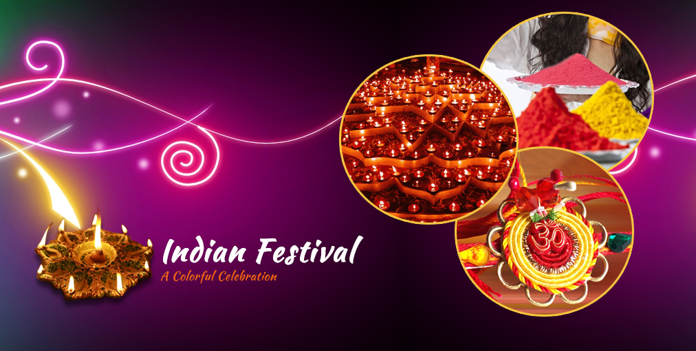
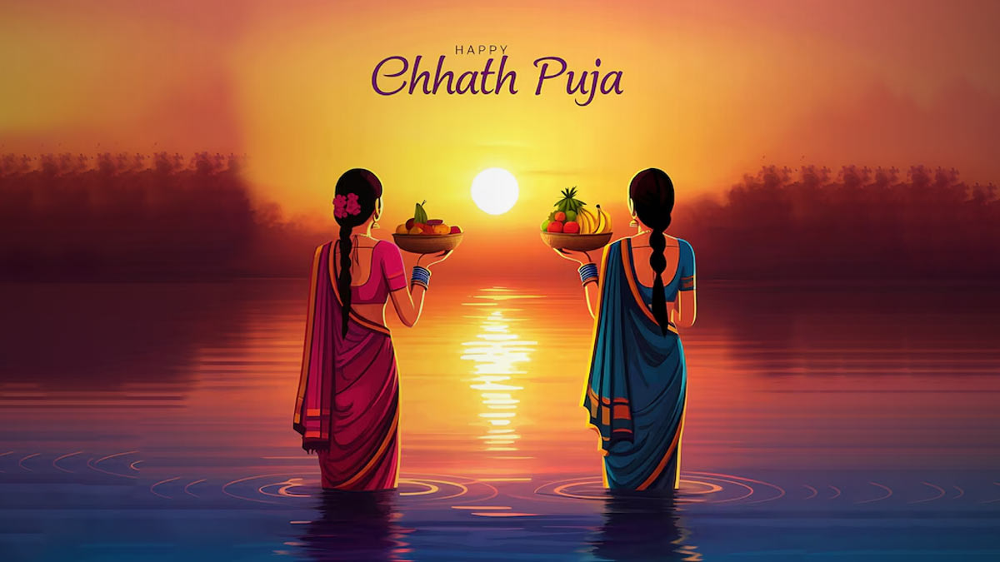
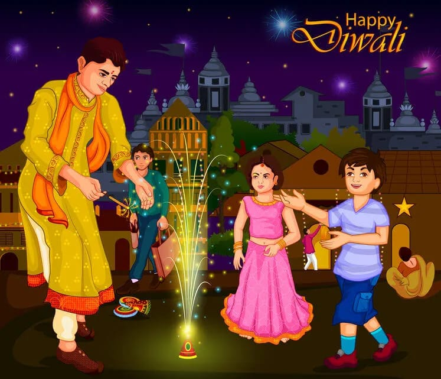
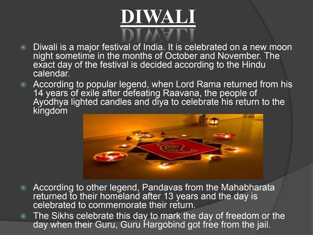
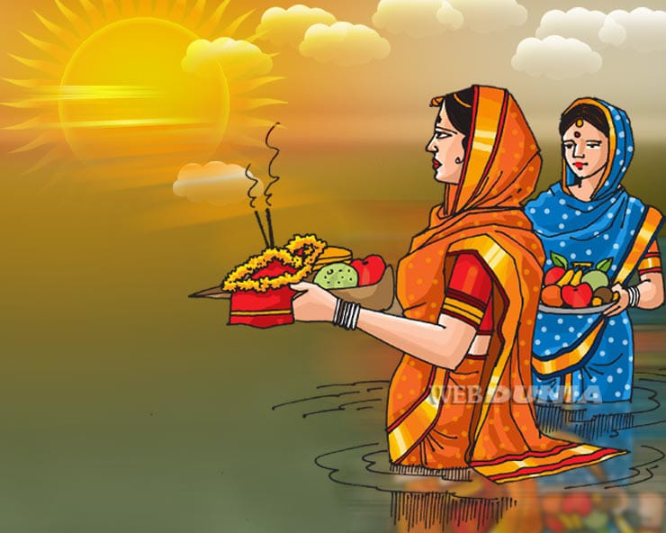
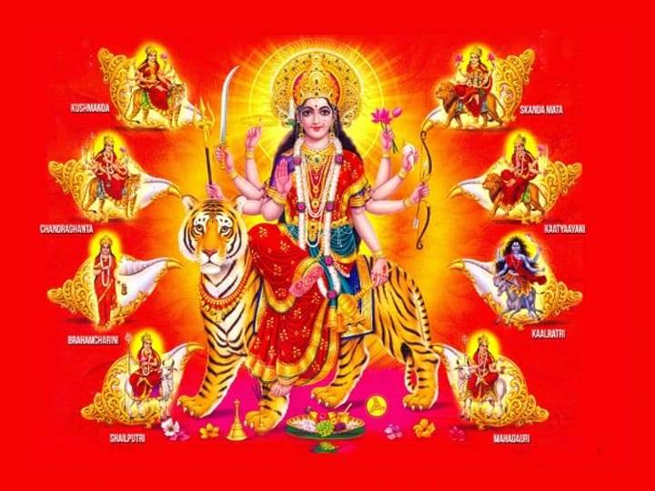
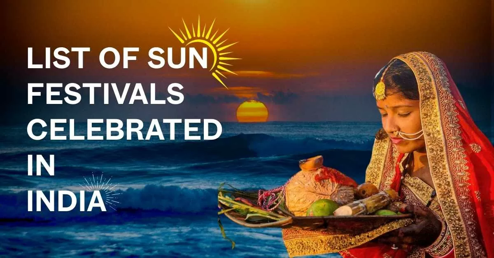
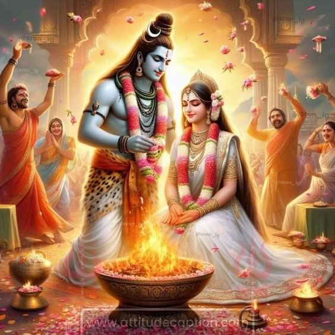

Chhath Puja
Chhath Puja is a Hindu festival primarily celebrated in North India, dedicated to the Sun God (Surya) and his wife Usha, where devotees offer prayers and gratitude to the sun by standing in a water body during sunrise and sunset, often observing a strict fast without water, signifying a deep connection between humans and the natural elements, particularly the life-giving power of the sun; it is considered a way to seek blessings for health, prosperity, and well-being for the family. Key points about Chhath Puja: Central deity: Lord Surya (Sun God) and his consort Usha, representing the rising sun. Rituals: Offering "Arghya" (water offerings) to the rising and setting sun while standing in a river or pond. Fasting: A strict fast without water for a significant period, often considered a form of spiritual purification. Significance: Celebration of the life-sustaining power of the sun, gratitude for nature's bounty, and a focus on family well-being. Chhath - Wikipedia Significance. Chhath puja is dedicated to the Sun God Surya, as it is thought that the sun is visible to every being and is the ba... Wikipedia Chhath Puja in Bihar: Process, rituals and its significance 1 Nov 2019 — Usha and Pratyusha, the two consorts of the Sun God are considered his energy that blesses humans with life, fertility, OpIndia Significance, Rituals, Myths And Tradition Of Chhath Puja 4 Nov 2024 — Chhath Puja, a significant festival primarily celebrated in Bihar and other parts of North India, particularly by the Bi... SHREE Show all read me
Holi
Holi (/ˈhoʊliː/) is a popular ancient Hindu festival,[1][9] also known as the Festival of Spring, the Festival of Colours or the Festival of Love.The festival celebrates the eternal and divine love of Radha Krishna.[12][13] It also signifies the triumph of good over evil,[14][15] as it celebrates the victory of Lord Vishnu as Narasimha Narayana over Hiranyakashipu.[16][17] It originated and is predominantly celebrated in the Indian subcontinent but has also spread to other regions of Asia and parts of the Western world through the South Asian diaspora. read more
Dwali
Diwali (English: /dɪˈwɑːliː/; Deepavali[3] (IAST: dīpāvalī) or Divali; related to Jain Diwali, Bandi Chhor Divas, Tihar, Swanti, Sohrai and Bandna) is a festival of lights and one of the major festivals celebrated by Hindus, Jains, Sikhs, and some Buddhists.[4] The festival usually lasts five days and is celebrated during the Hindu lunisolar month Kartika (between mid-October and mid-November).[5][6][7] One of the most popular festivals of Hinduism, Diwali symbolizes the spiritual "victory of light over darkness, good over evil, and knowledge over ignorance".[8][9][10][11] The festival is widely associated with Lakshmi, goddess of prosperity and Ganesha, god of wisdom and the remover of obstacles, with many other regional traditions connecting the holiday to Sita and Rama, Vishnu, Krishna, Durga, Shiva, Kali, Hanuman, Kubera, Yama, Yami, Dhanvantari, or Vishvakarman. Furthermore, it is a celebration of the day Rama returned to his kingdom in Ayodhya with his wife Sita and his brother Lakshmana after defeating the demon Ravana in Lanka and serving 14 years of exile. read more

Diwali festival
उत्सव या पर्व या त्योहार एक समुदाय द्वारा मनाया जाने वाला एक वार्षिक घटना है और उस समुदाय और उसके धर्म या संस्कृतियों के कुछ विशिष्ट पहलुओं पर केन्द्रित है। इसे साधारणतः स्थानीय या राष्ट्रीय अवकाश या मेला के रूप में चिह्नित किया जाता है।

Chhath
Chhath is an ancient Hindu festival historically native to Nepalis and Biharis of the Indian subcontinent, more specifically, the Indian state of Bihar along with West Bengal, Uttar Pradesh, Jharkhand, and the southern parts of Nepal.[1][2][3] It has become popular with the Nepali hilly community in the recent years, thanks to the influence of southern Nepalis. Prayers during Chhath puja are dedicated to the solar deity, Surya, to show gratitude and thankfulness for bestowing the bounties of life on earth and to request that certain wishes be granted. read more

Navratri
Navaratri[a] is a biannual and one of the most revered Hindu festivals observed in the honour of Mother Goddess Durga. It spans over nine nights (and ten days), first in the month of Chaitra (March/April of the Gregorian calendar) and again in the month of Sharada. It is observed for different reasons and celebrated differently in various parts of the Hindu Indian cultural sphere.[2][3] Theoretically, there are four seasonal Navaratri. However, in practice, it is the post-monsoon autumn festival called Sharada Navaratri. The festival is celebrated in the bright half of the Hindu calendar month Ashvin, which typically falls in the Gregorian months of September and October. read morefestivals
A festival is a public or private event that is organised for the purpose of celebrating, commemorating or promoting a specific cultural, artistic, religious or social activity. Festivals are usually of limited duration, ranging from a few days to several weeks, and are often held on a regular, annual or biannual basis. Read me

Chhath festivals
Chhath is a major Hindu festival celebrated in Bihar and eastern Uttar Pradesh. Almost all civilizations have worshipped the 'God Sun', but it has a unique form in Bihar Chhath Puja is the only occasion where the setting sun is worshipped along with the rising sun. According to the Hindu calendar, Chhath Puja is celebrated on the sixth day of Kartik month. Chhath Puja, also known as Surya Shashti, is a bathing festival followed by a four-day period of abstinence and ritual purity. Chhath Puja is a four-day long strict and spiritual observance. The first day of the Chhath Puja includes taking a dip in the holy river/any water body. People also take the water of Ganges to their homes to perform special offerings and rituals. Houses are thoroughly cleaned on this day. The second day of Chhath, also known as Kharna, involves devotees observing a day long fast, which is broken in the late evening after performing the worship of Mother Earth. The offerings to the God include rice pudding (kheer) and fruits, which is distributed among family members and friends. The third day of Chhath goes in the preparation of the prasad (offerings) for the evening offerings, also known as Sanjhiya Arghya. In the evening, large numbers of devotees gather on the banks of rivers and make offerings (Arghya) to the setting sun. The folk songs are played displaying the culture and history of Bihar. The night of the third day witnesses a colorful event known as Kosi. A canopy is made from sugarcane sticks and lighted earthen lamps are placed inside the canopy along with baskets filled with prasad. On the fourth and final day of Chhath, family members and friends go to the banks of rivers before sunrise and making offerings (Arghya) to the rising sun. After this ritual, devotees break their fast and distribute Prasad to neighbors and relatives.

Maha Shivaratri is a revered Hindu festival that holds deep spiritual significance, signifying the triumph over darkness and life's obstacles through fasting and meditation. This auspicious occasion marks the convergence of the divine energies of Lord Shiva and Goddess Shakti. It is believed that on this day, the spiritual energies of the Universe are particularly potent. The observance of Maha Shivaratri entails fasting, meditation on Lord Shiva, introspection, promoting social harmony, and vigils at Shiva temples. Unlike most Hindu festivals celebrated during daylight hours, Shivaratri is a unique festival observed during the night. There are several legends associated with Maha Shivaratri, and its significance is elaborated upon in various Puranas, including the Linga Purana. These texts emphasise the importance of observing Maha Shivaratri Vrat (fast) and paying homage to Lord Shiva and his symbolic representation, the Lingam. According to one legend, it was on this night that Lord Shiva performed the 'Tandava' dance, a powerful and divine expression of creation and destruction. Devotees chant Shiva hymns and recite scriptures, symbolically participating in the cosmic dance performed by the almighty and celebrating his omnipresence. Another legend relates to the marriage of Lord Shiva and Goddess Parvati, which is said to have taken place on this day. This aspect makes the festival especially significant for married couples and unmarried women seeking a good husband
Maha Shivaratri 2025
Maha Shivaratri is predominantly a Hindu festival that happens every year in honour of Lord Shiva. The day marks the marriage day of Shiva. The day falls right at the end of the winter (late February or beginning of March) or just before the arrival of summer. A major festival for the Hindus, prayers are offered to overcome darkness and ignorance in one's life. In 2025, the auspicious occasion will be celebrated on the 26th of February, Wednesday.Maha Shivaratri is a revered Hindu festival that holds deep spiritual significance, signifying the triumph over darkness and life's obstacles through fasting and meditation. This auspicious occasion marks the convergence of the divine energies of Lord Shiva and Goddess Shakti. It is believed that on this day, the spiritual energies of the Universe are particularly potent. The observance of Maha Shivaratri entails fasting, meditation on Lord Shiva, introspection, promoting social harmony, and vigils at Shiva temples. Unlike most Hindu festivals celebrated during daylight hours, Shivaratri is a unique festival observed during the night. There are several legends associated with Maha Shivaratri, and its significance is elaborated upon in various Puranas, including the Linga Purana. These texts emphasise the importance of observing Maha Shivaratri Vrat (fast) and paying homage to Lord Shiva and his symbolic representation, the Lingam. According to one legend, it was on this night that Lord Shiva performed the 'Tandava' dance, a powerful and divine expression of creation and destruction. Devotees chant Shiva hymns and recite scriptures, symbolically participating in the cosmic dance performed by the almighty and celebrating his omnipresence. Another legend relates to the marriage of Lord Shiva and Goddess Parvati, which is said to have taken place on this day. This aspect makes the festival especially significant for married couples and unmarried women seeking a good husband